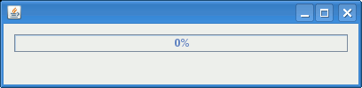

The Java File Copy Library is a software library that provides an easy and powerful API for file copy operations. You can define a batch of copy jobs with regular expressions and can use a Swing Component to show the overall copy progress.
Before starting the copy operation you define the sources with a base directory and a search pattern defined by regular expressions. Then you define the copy destinations (yes, you can copy your files to several destinations at once). With the given sources and destinations you can define a copy job:
Source[] sources = new Source[]{
// all files from directory /home/user/source1/
new Source("/home/user/source1/", ".*"),
// all *.java files from directory /home/user/source2/
new Source("/home/user/source2/", ".*\\.java")
};
String[] destinations = new String[]{
"/home/user/destination1",
"/home/user/destination2"
};
CopyJob copyJob = new CopyJob(sources, destinations, true/*recursive*/);
If you are done with defining your copy jobs you can let them execute by a FileCopier instance all at once.
fileCopier.copy(copyJob1, copyJob2);
This function uses
Varargs
for the parameters. This way you can throw as many copy jobs at a
FileCopier at once as you want.
If you want to see the progress of your copy operation in a GUI application, you can add a FileCopierPanel to your GUI application and give it a reference to your current FileCopier:
FileCopier fileCopier = new FileCopier();
fileCopierPanel.setFileCopier(fileCopier);
In GUI applications you should use a
SwingWorker
to execute the fileCopier.copy() operation.
The Java File Copy Library Swing Component shows the following information per default:
Simple example: 
For Downloads, Bug Tracking, etc. please see the SourceForge Project for Java File Copy Library